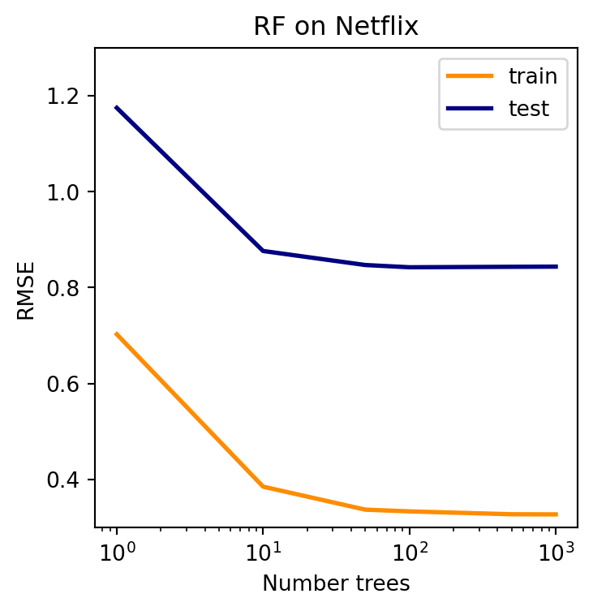
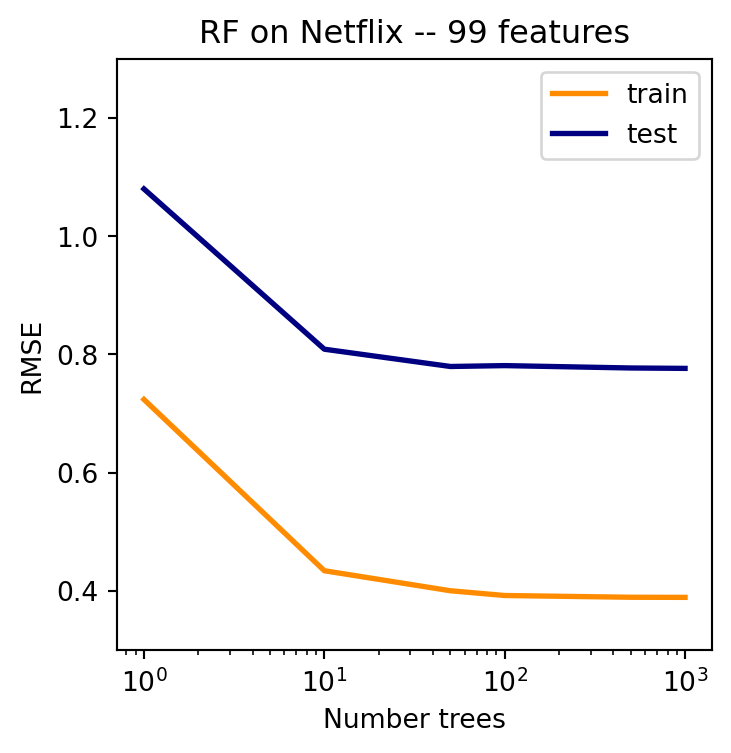
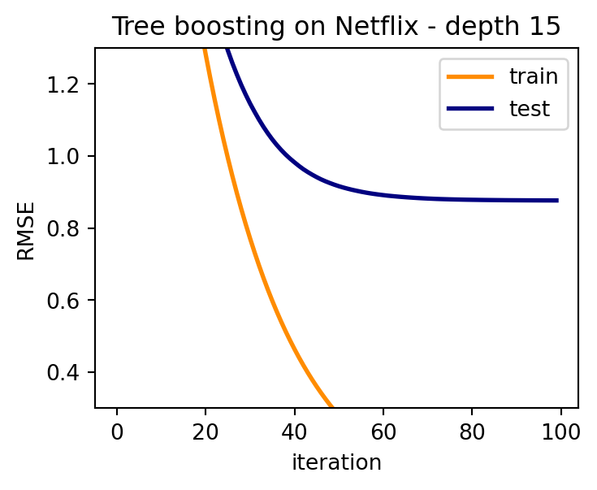

from sklearn.ensemble import RandomForestRegressor
ntr = NE_Xtr.shape[0]
nte = NE_Xte.shape[0]
tr_err = []
te_err = []
ntrees = [1, 10, 50, 100, 500, 1000]
for ntree in ntrees:
RF = RandomForestRegressor(n_estimators=ntree, min_samples_split=2,
min_samples_leaf=1, max_features=0.33, bootstrap=True)
RF = RF.fit(NE_Xtr, NE_Ytr)
yhat_tr = RF.predict(NE_Xtr)
yhat = RF.predict(NE_Xte)
tr_err.append(np.sqrt(np.sum((yhat_tr - NE_Ytr)**2) / ntr))
te_err.append(np.sqrt(np.sum((yhat - NE_Yte)**2) / nte))Introduction to Data Science
Ensemble Methods: Random Forest and Boosting - Class 11
Giora Simchoni
gsimchoni@gmail.com and add #intro2ds in subject
Stat. and OR Department, TAU
Random Forest
Ensemble methods: using trees as subroutines
Instead of a single tree being a model, combine many trees into a model:
- Bagging and Random Forest: Fit different trees to the data and average them
- Boosting: Adaptively build a model from adding more and more trees
We will focus now on Random Forest (also Bagging), later discuss boosting
Main idea of Random Forest: Take advantage of the instability and high variance of the trees
Trees are unstable and greedy: if we change the data a little bit, the tree can change a lot
Now we intentionally change (randomize) the data to get a different tree every time, and average them
Reminder: the value of averaging
This is captured through different things we learned: CLT, LLN, variance of the average…
Assume \(z_i \sim F\) has some distribution with mean \(\mu\) and variance \(\sigma^2\)
If \(z_1,\dots,z_m \sim F\) are independent, then \(Var(\bar{z}) = \sigma^2 / m\), so \(\bar{z}\) is close to \(\mu\) for large \(m\)
What if \(z_1,\dots,z_m\) are dependent?
Slightly more complex setting: assume \(z_1,\dots,z_m\) are somewhat dependent \(Cov(z_i,z_j) = \rho \sigma^2,\;\rho<1\)
Now we still get some variance reduction from averaging: \[Var(\bar{z}) \approx \rho\sigma^2 + (1-\rho)\sigma^2/ m\]
This is exactly the intuition behind Random Forest
Random forest algorithm
- Repeat many times:
- Randomize the data (by taking a subsample or a bootstrap sample)
- Build a tree on the randomized data, also randomize tree building (e.g. by randomly choosing variables to consider at each node)
- To predict at new \(x_0\), apply each tree and average their predictions
- Intuition: trees are different because of randomization, they are like \(z_1,...z_n \stackrel{\cdot}{\sim} P(y|x_0)\)
- Related (\(\rho > 0\)) because it’s the same training set \(T\)
- Still different from each other (\(\rho < 1\)) because of randomization and instability of trees
- Hence we expect (and indeed see!) that Random Forest gives more accurate predictions of \(E(y|x)\) or \(P(y=1|x)\) than single trees
RF in Action
RF for Netflix (Regression)
fig = plt.figure(figsize=(4, 4))
ax = fig.add_subplot(1,1,1)
ax.set_xscale('log')
plt.plot(ntrees, tr_err, color='darkorange', lw=2, label='train' )
plt.plot(ntrees, te_err, color='navy', lw=2, label='test')
plt.ylim([0.3, 1.3])
plt.xlabel('Number trees')
plt.ylabel('RMSE')
plt.title('RF on Netflix')
plt.legend(loc="upper right")
plt.show() 
Let’s try it bravely on the full 99 dimensions!
A single tree can only get you so far:
tr_err = []
te_err = []
ds = [2, 3, 5, 7, 10, 15]
for depth in ds:
Netree = DecisionTreeRegressor(max_depth=depth)
Netree = Netree.fit(NE_Xtr_noNAN, NE_Ytr)
yhat_tr = Netree.predict(NE_Xtr_noNAN)
yhat = Netree.predict(NE_Xte_noNAN)
tr_err.append(np.sqrt(np.sum((yhat_tr - NE_Ytr)**2) / ntr))
te_err.append(np.sqrt(np.sum((yhat - NE_Yte)**2) / nte))tr_err = []
te_err = []
ntrees = [1, 10, 50, 100, 500, 1000]
for ntree in ntrees:
RF = RandomForestRegressor(n_estimators=ntree, min_samples_split=5,
min_samples_leaf=2, max_features=10, bootstrap=True)
RF = RF.fit(NE_Xtr_noNAN, NE_Ytr)
yhat_tr = RF.predict(NE_Xtr_noNAN)
yhat = RF.predict(NE_Xte_noNAN)
tr_err.append(np.sqrt(np.sum((yhat_tr - NE_Ytr)**2) / ntr))
te_err.append(np.sqrt(np.sum((yhat-NE_Yte)**2) / nte))
Summary of Random Forest
Uses advantages of trees, mitigates their shortcomings
RF trees should be as different as possible from each other:
- Uses the high-variance property of trees
- Add randomization: subsampling of training data for each tree; randomizations in tree splitting
Add diversity by making trees bigger, control variance by averaging, therefore:
- Trees should be as big as possible
- Should build and average as many of them as computationally possible
- Great advantages for “big data”: highly parallelizable and (almost) hyperparametr free!
Boosting
Boosting: intuitive idea
We gradually and iteratively build the overall model as a sum of smaller models called weak learners
Each weak learner seeks to improve the model we have so far
Weak learners can be any predictive model, most widely used: trees
How do we capture the notion of improve the model we have so far?
Boosting: overall scheme
- Initialize \(F^{(0)}(x) = 0,\; \forall x\)
- At stage \(t \geq 1\):
- Calculate \(Y^{(t)} = (y_1^{(t)},\ldots,y_n^{(t)})\) capturing what the model \(F^{(t-1)}\) has not yet explained
- Fit a weak learner \(\hat{f}^{(t)}\) to \(T^{(t)} = (X,Y^{(t)})\)
- Update \(F^{(t)} = F^{(t-1)} + \epsilon \hat{f}^{(t)}\)
- Calculate \(Y^{(t)} = (y_1^{(t)},\ldots,y_n^{(t)})\) capturing what the model \(F^{(t-1)}\) has not yet explained
Details: How to determine \(Y^{(t)}\)? Which weak learner to use? What is \(\epsilon\)?
Example: Tree boosting for regression
Defining \(Y^{(t)}\) as \(y_i^{(t)} = (y_i - F^{(t-1)}(x_i))\) the current residual (what the model does not explain)
Weak learner: trees, usually small — two- or three-level trees as \(\hat{f}^{(t)}\)
Make \(\epsilon\) as small as possible (\(\epsilon\)-boosting): tradeoff between accuracy and computation
Boosted trees: depth 2
ntr = NE_Xtr_noNAN.shape[0]
nte = NE_Xte_noNAN.shape[0]
tr_err = []
te_err = []
Ytr_now = NE_Ytr
yhat_tr = np.zeros(ntr)
yhat_te = np.zeros(nte)
eps = 0.05
for iter_num in range(200):
tree = DecisionTreeRegressor(max_depth = 2)
tree.fit(NE_Xtr_noNAN, Ytr_now)
yhat_tr_now = tree.predict(NE_Xtr_noNAN)
yhat_te_now = tree.predict(NE_Xte_noNAN)
yhat_tr += eps * yhat_tr_now
yhat_te += eps * yhat_te_now
tr_err.append(np.sqrt(np.sum((yhat_tr - NE_Ytr)**2) / ntr))
te_err.append(np.sqrt(np.sum((yhat_te - NE_Yte)**2) / nte))
Ytr_now = NE_Ytr - yhat_trplt.figure(figsize=(4, 3))
plt.plot(range(200), tr_err, color='darkorange', lw=2, label='train' )
plt.plot(range(200), te_err, color='navy', lw=2, label='test')
plt.ylim([0.3, 1.3])
plt.xlabel('iteration')
plt.ylabel('RMSE')
plt.title('Tree boosting on Netflix - depth 2')
plt.legend(loc="upper right")
plt.show()
print(f'test RMSE iter 0: {te_err[0]: .2f}, iter 10: {te_err[10]:.2f}, iter 100: {te_err[100]:.2f}, iter 199: {te_err[199]:.2f}')
test RMSE iter 0: 3.56, iter 10: 2.23, iter 100: 0.78, iter 199: 0.77Boosted trees: depth 3
tr_err = []
te_err = []
Ytr_now = NE_Ytr
yhat_tr = np.zeros(ntr)
yhat_te = np.zeros(nte)
eps = 0.05
for iter_num in range(200):
tree = DecisionTreeRegressor(max_depth = 3)
tree.fit(NE_Xtr_noNAN, Ytr_now)
yhat_tr_now = tree.predict(NE_Xtr_noNAN)
yhat_te_now = tree.predict(NE_Xte_noNAN)
yhat_tr += eps * yhat_tr_now
yhat_te += eps * yhat_te_now
tr_err.append(np.sqrt(np.sum((yhat_tr - NE_Ytr)**2) / ntr))
te_err.append(np.sqrt(np.sum((yhat_te - NE_Yte)**2) / nte))
Ytr_now = NE_Ytr - yhat_trplt.figure(figsize=(4,3))
plt.plot(range(200), tr_err, color='darkorange', lw=2, label='train' )
plt.plot(range(200), te_err, color='navy', lw=2, label='test')
plt.ylim([0.3, 1.3])
plt.xlabel('iteration')
plt.ylabel('RMSE')
plt.title('Tree boosting on Netflix - depth 3')
plt.legend(loc="upper right")
plt.show()
print(f'test RMSE iter 0: {te_err[0]: .2f}, iter 10: {te_err[10]:.2f}, iter 100: {te_err[100]:.2f}, iter 199: {te_err[199]:.2f}')test RMSE iter 0: 3.56, iter 10: 2.23, iter 100: 0.77, iter 199: 0.77Boosted trees: depth 15
tr_err = []
te_err = []
Ytr_now = NE_Ytr
yhat_tr = np.zeros(ntr)
yhat_te = np.zeros(nte)
eps = 0.05
for iter_num in range(100):
tree = DecisionTreeRegressor(max_depth = 15)
tree.fit(NE_Xtr_noNAN, Ytr_now)
yhat_tr_now = tree.predict(NE_Xtr_noNAN)
yhat_te_now = tree.predict(NE_Xte_noNAN)
yhat_tr += eps * yhat_tr_now
yhat_te += eps * yhat_te_now
tr_err.append(np.sqrt(np.sum((yhat_tr - NE_Ytr)**2) / ntr))
te_err.append(np.sqrt(np.sum((yhat_te - NE_Yte)**2) / nte))
Ytr_now = NE_Ytr - yhat_trplt.figure(figsize=(4, 3))
plt.plot(range(100), tr_err, color='darkorange', lw=2, label='train' )
plt.plot(range(100), te_err, color='navy', lw=2, label='test')
plt.ylim([0.3, 1.3])
plt.xlabel('iteration')
plt.ylabel('RMSE')
plt.title('Tree boosting on Netflix - depth 15')
plt.legend(loc="upper right")
plt.show()
print(f'test RMSE iter 0: {te_err[0]: .2f}, iter 10: {te_err[10]:.2f}, iter 100: {te_err[99]:.2f}')
test RMSE iter 0: 3.56, iter 10: 2.23, iter 100: 0.89Boosting: in Depth
A more disciplined view
For regression, taking the residual as \(y_i^{(t)}\) makes sense
What is an analogy for classification?
What about a more rigorous mathematical explanation of what we are doing?
There are several approaches of varying mathematical complexity for describing and analyzing boosting
The additive model view
Start with a very large (possibly infinite) set of \(q\) candidate “weak learners”: \(h_1(x), \dots, h_q(x)\)
We are looking for a “linear” model of the form \(\hat{f}(x) = \sum_{k=1}^q \hat{\beta}_k h_k(x)\)
In boosted trees example the \(h_k\)’s are all possible trees of the given depth
Since \(q\) is huge we cannot directly find a good \(\hat{\beta} \in \mathbb{R}^q\)
Additive model via boosting
At each iteration \(t\) we find a “good” candidate \(h_{k_t}\) and add \(\epsilon h_{k_t}\) to the current model
After \(T\) iterations we have a model where \(\hat{\beta}_k = \epsilon \times \# \{k_t = k\}\) (the number of times \(k\) was chosen)
How do we define a good \(h_{k_t}\) to update its coefficient?
One option: given the current model \(F^{(t-1)}\), which \(h_k\) improves the model fit the fastest when we add it to the model?
This can be captured by using the derivative of the loss which measures the fit. Derivative of the RSS (squared loss): \[\left.\frac{\partial RSS(F^{(t-1)})}{\partial \hat{y}_i}\right|_{\hat{y}_i= F^{(t-1)}(x_i)} = -2 (y_i - F^{(t-1)}(x_i))\]
The Gradient Boosting Paradigm
Choose a loss function for modeling (like RSS for regression)
At each iteration: calculate the (negative) gradient of the loss function at the current model, use that as \(Y^{(t)}\) for the next weak learner
Interpretation: trying to find a weak learner \(h_{k_t}\) which “behaves like” the negative gradient, which is the direction of fastest decrease of the loss
- Can be applied with different loss functions for regression or classification (In the HW – classification on wikiart paintings)
Boosting for Netflix (Regression)
from sklearn.ensemble import GradientBoostingRegressor
GBR = GradientBoostingRegressor(loss='squared_error', learning_rate=0.05,
n_estimators=200, max_depth=3)
GBR.fit(NE_Xtr_noNAN, NE_Ytr)
yhat_tr = GBR.predict(NE_Xtr_noNAN)
yhat_te = GBR.predict(NE_Xte_noNAN)
RMSE_tr = np.sqrt(np.sum((yhat_tr - NE_Ytr)**2) / ntr)
RMSE_te = np.sqrt(np.sum((yhat_te - NE_Yte)**2) / nte)
print(f'200 trees, depth 3: train RMSE: {RMSE_tr: .2f}, test RMSE: {RMSE_te: .2f}')200 trees, depth 3: train RMSE: 0.71, test RMSE: 0.77Trees-based Ensembles: RF vs Boosting
RF: Average trees which are as different as possible
- Randomization is key
- Big, highly variable trees
- Average effectively: many trees
Boosting: Adaptively build additive model over trees
- Trees should not be too big
- Learn slowly: Small \(\epsilon\), many trees
- Both of them take a bunch of bad predictive models (trees) and combine them into a good model!
- What does this say in terms of implementation and model-size on disk?